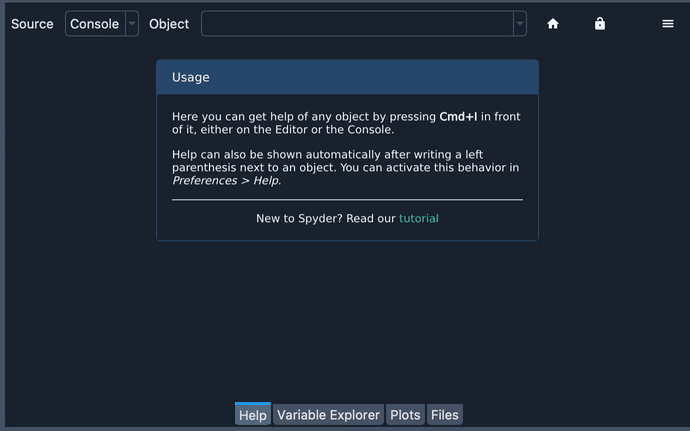

Ayuda#
Puedes usar el panel de Ayuda para encontrar, renderizar y mostrar la documentación enriquecida para cualquier objeto con una cadena de documentación, incluyendo módulos, clases, funciones y métodos. Esto te permite acceder fácilmente a la documentación directamente desde Spyder, sin tener que interrumpir tu flujo de trabajo.

También puedes acceder al tutorial de Spyder desde aquí, que te guiará a través de algunos pasos básicos para usar sus características clave.

Obtener ayuda#
La ayuda se puede recuperar tanto mediante el análisis estático de los archivos abiertos en el Editor, o inspeccionando dinámicamente un objeto en una Terminal de IPython. Puedes activar la ayuda manualmente pulsando el atajo de ayuda configurable (Ctrl-I por defecto).

También puedes introducir manualmente el nombre del objeto en el cuadro de texto Objeto en la parte superior del panel, si Terminal es seleccionado como el Origen.
La ayuda automática puede ser habilitada individualmente tanto para el Editor como para la Terminal bajo , y se activa y desactiva dinámicamente mediante el icono de bloqueo en la esquina superior derecha del panel Ayuda. Si está habilitado, simplemente tecleando un paréntesis izquierdo (() después de una función o nombre del método te mostrará su ayuda asociada.
Entender los modos de ayuda#
Puedes usar el menú de opciones ( icono Hamburguesa) en la parte superior derecha del panel Ayuda para cambiar el modo de visualización de ayuda.
El modo Texto enriquecido renderiza las cadenas de documentación del objeto con Sphinx, El modo Texto plano muestra la docstring sin formatear, mientras que Mostrar código fuente muestra la docstring en línea con el código para el objeto seleccionado, o cualquier porción de Python (si el objeto no es Python puro). Esto último puede ser útil cuando los docstrings no están disponibles o son insuficientes para documentar el objeto.
Obtener ayuda al pasar el cursor#
También puedes obtener ayuda resumida para objetos pasando el cursor sobre ellos en el Editor. Al hacer clic en la ventana emergente se abrirá la documentación completa en el panel de Ayuda.

Controlar importación automática#
Cuando obtienes ayuda en la IPython Console para un objeto que no ha sido importado previamente, se carga automáticamente en el intérprete interno de Spyder para que la documentación pueda mostrarse cuando esté disponible. Esto puede deshabilitarse en el menú de opciones de Ayuda en la parte superior derecha del panel para que sólo se muestre la documentación de objetos importados.